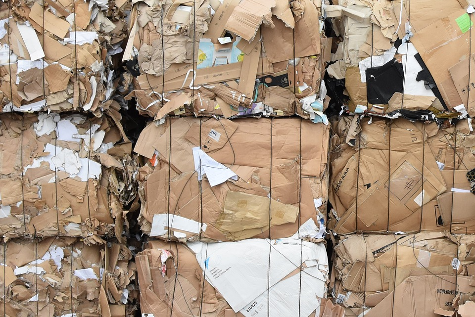

GREAT JOB! You can recycle cardboard boxes and scraps.

Although cardboard may be biodegardable, it is best to recycle it to avoid littering the environment.
It is also difficult to say how long it takes for cardboard to break down into microorganisms, therefore it is better to put it into a bin rather than leaving it out for several months.